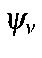

How, then, do we relate the complicated motion of a molecular vibration to the mass and spring model?
During a molecular vibration, each atom follows a simple harmonic motion. So the problem is, to what extent does each atom contribute to the mass, and to what extent does each atom contribute to the spring?
In order to answer this, first consider some simple systems. In the system
H-X, where X has a very large mass, compared to that of the H, the effective
mass is obviously that of H. In H2, the effective mass is half that of a
single H. Why is this so? In H-X, particle X is stationary, and particle H
contributes 100% of the energy to the vibration. In H2, each particle
obviously contributes 50%, but now the center of mass is half way between the
two particles. If the force constants are the same in H-X and in H-H, then
the period of vibration of H-X will be 21/2
times that of H-H. This is
the same period as for a system of two particles, each of which having a mass
twice that of a H particle. For a system of two particles, A and B, having
masses MA and MB, the vibrational wavefunction, ,
is:
In other words, the contribution to the effective mass is equal to the intensity of the wavefunction on each atom, times the mass of the atom, times the intensity of the wavefunction. This is intuitively correct: the total vibration is composed of contributions from each particle, and the amount each particle contributes is proportional to its intensity in the wavefunction. The mass of each particle is also proportional to its intensity in the wavefunction.
Extension to polyatomic molecules is now trivial. The effective mass is given
by: